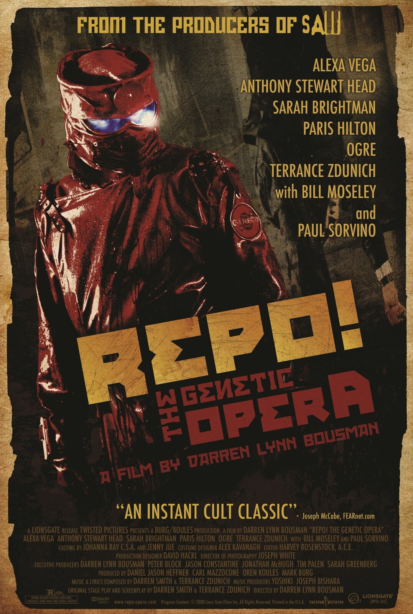

Repo! The Genetic Opera is a rock musical film by Darren Lynn Bousman set in a dystopian near-future rife with
comic book style visuals, gothic appreciation, and a catchy musical score that come together to tell a tale of
a society whose population has experienced an epidemic of organ failures and a corporation that offers to help
those in need. Unfortunately, should you miss a payment or skip out on your organ bill, the consequences can
be dire, and Repo Men will come looking for you.
This musical is so visually enthralling with gothic and ethereal elements that set the stage for the world in
which organ repossession has become possible. Having seen it in theatres for its recent anniversary, Repo! still
holds up as a timeless classic with its striking visuals and punchy songs and a plotline that holds up until the
end.
I definitely recommend this film to anyone who is a lovers of musicals, gothic enthusiasts, and fans of
having a fun time when watching a movie with incredible energy.
★ ★ ★ ★ ★
5 out of 5 stars!